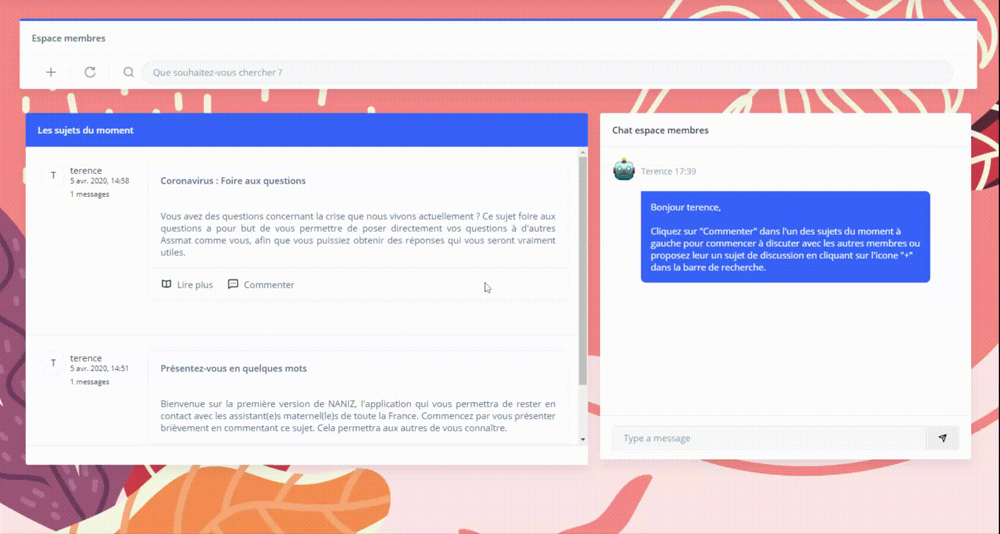

Discuter avec d'autres membres
L'espace membres dans lequel vous vous trouvez, vous permettra de discuter avec les autres membres autour de
sujets de discussions créés à cet effet. Pour commencer à discuter, sélectionnez un sujet dans la zone "Les
sujets du moment" et cliquez sur "Commenter" dans le sujet choisi. Le chat à droite s'activera et vous pourrez
commencer à discuter.
Créer un sujet de discussion
Cliquez sur l'icône "+" dans la barre de recherche de l'espace membres et laissez vous guider.
